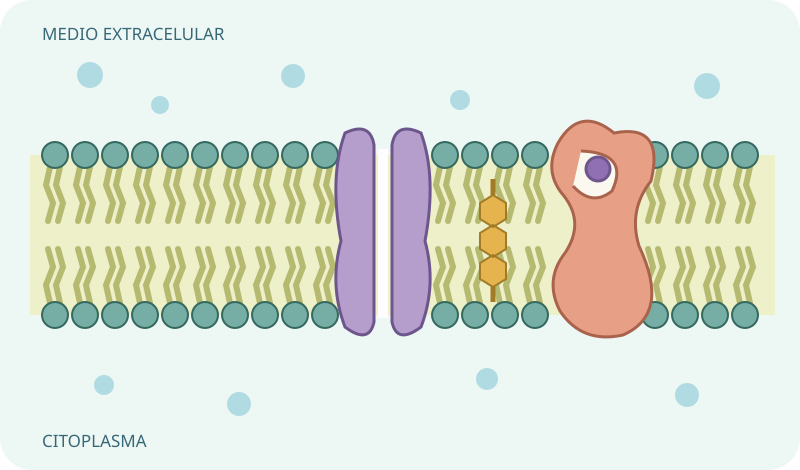
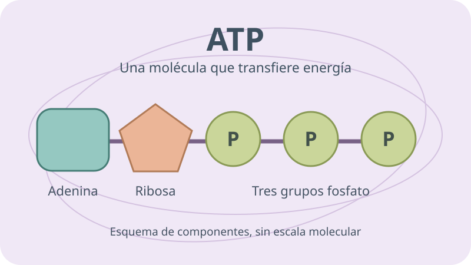
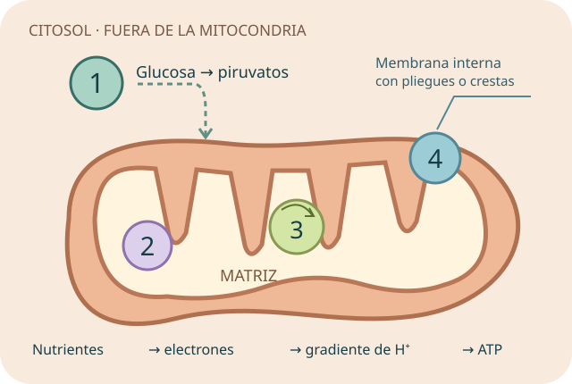

Observa la ruta.
Ubica qué sustancia cambia, por dónde se mueve y en qué parte de la célula ocurre.
KENISA · Laboratorio de vida
La vida en movimiento.
Sustancias que cruzan. Energía que transforma.
Empezamos en la frontera de la célula: descubre qué entra, qué sale y por qué no todo cruza de la misma manera.
Comenzar actividad 01 ↗
Tu recorrido · 04 de 04 disponibles
Explora, toma decisiones y aprende del porqué de cada respuesta.
Explora la bicapa, predice el movimiento del agua y encuentra el mecanismo detrás de cada situación.
Entrar a la actividad
Clasifica procesos, completa el ciclo de ATP y experimenta con enzimas. Cinco estaciones para conectar materia y energía.
Estudiar la actividad
Sigue el viaje de la glucosa al ATP. Explora la mitocondria, ordena las etapas y distingue lo que entra de lo que se produce.
Entrar a la actividad
Recicla NAD⁺ para que la glucólisis continúe. Conecta pan, yogur y músculo; compara productos y energía.
Cerrar el recorridoTu sesión está completa: cuatro actividades para conectar transporte, nutrientes, metabolismo y energía celular.
Ubica qué sustancia cambia, por dónde se mueve y en qué parte de la célula ocurre.
Usa gradientes, nutrientes y condiciones para anticipar qué ocurrirá.
Combina sustancia, gradiente y energía. Después practica tus errores.